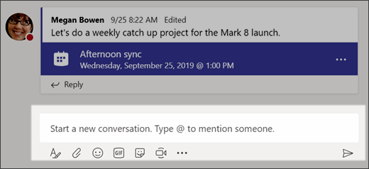
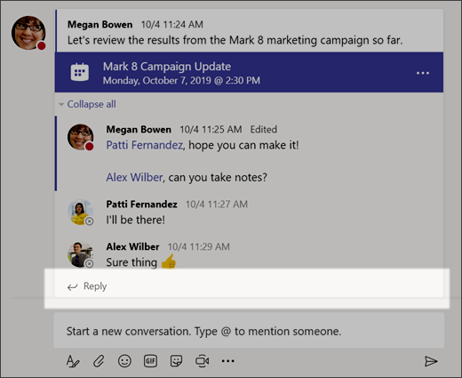
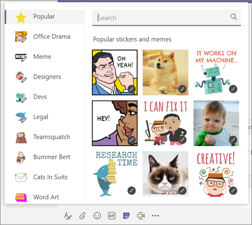
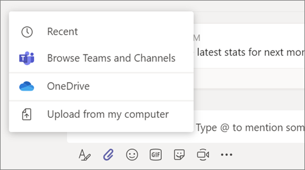

Chatten en bestanden delen in Teams

Een nieuw gesprek starten...
...met het hele team
Klik op Teams De knop
Teams en kies een team en een kanaal.
In het vak waarin u uw bericht typt, zegt u waar u aan denkt en klik u op
Verzenden .
...met een persoon of groep
1. Klik aan de bovenkant van de app op Nieuwe chat De knop
Nieuwe chat .
2. Typ de naam van de persoon of de mensen waarmee u wilt chatten in het veld
Aan.
3. In het vak waarin u uw bericht typt, zegt u waar u aan denkt en klik u op Verzenden De knop
Verzenden .

Reageren op een gesprek
Gesprekken in een kanaal worden gesorteerd op datum en vervolgens in een discussielijn weergegeven. De antwoorden in de threads worden onder de oorspronkelijke post gezet, zodat het gemakkelijker is om meerdere gesprekken te volgen.
1. Zoek de gespreksthread waarop u wilt antwoorden.
2. Klik op
Antwoorden, voeg uw bericht toe en klik op
Verzenden .

Aan de slag met leuke emoji, memes en gifs
Communiceer op een originele manier en maak indruk op uw collega’s!
Klik op
Sticker onder het vak waarin u uw bericht typt en kies vervolgens een meme of sticker in een van de categorieën.
De
Sticker -catalogus bevat heel wat verschillende aanpasbare stickers en memes. U kunt zelfs uw eigen stickers uploaden! Bekijk
Emoji voor lachebekjes en
Giphy voor geanimeerde GIF's.

Een bestand delen
Soms volstaan woorden niet en moet u een bestand aan een kanaalgesprek toevoegen.
Tip: In Teams kunt u heel gemakkelijk met
Microsoft Office-documenten werken.
1. Klik in uw kanaalgesprek op
Bijvoegen De knop Bestand kiezen onder het vak waarin u uw bericht typt.
2. Selecteer een of meer van deze opties:
■
Recent
■
In Teams en kanalen bladeren
■
OneDrive
■
Uploaden vanaf mijn computer
3. Selecteer een bestand >
Een koppeling delen.
Als u een bestand uploadt vanaf uw computer, selecteer dan een bestand, klik op
Openen en vervolgens op
Verzenden .
U kunt alle bestanden die u in het kanaalgesprek hebt geplaatst altijd zien via het tabblad
Bestanden.